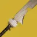

推荐者：
Flos_#4022双铸造故我在棱镜猎
 猎人 · 棱镜 · 强力S29 · 凯旋纪念碑
猎人 · 棱镜 · 强力S29 · 凯旋纪念碑
类光剑bd 无限绿弹 不同的是可处理一些飞天单位 不必近身输出 超凡更快 解绑了加密数据盘 神器更灵活
适用环境
# 双铸造故我在棱镜猎 推荐人：Flos_#4022 描述：类光剑bd 无限绿弹 不同的是可处理一些飞天单位 不必近身输出 超凡更快 解绑了加密数据盘 神器更灵活 更新：2026.9.11 场景：宗师/终极 分支：棱镜 强度：强力 核心：故我在 ## 职业 职业：猎人#row:elements/class-abilities/分节/猎人 超能：黄金枪：神枪手#375052468 星相：飞升#2835214901、严冬帷幕#2835214902 碎片：保护琢面#2626922120、黎明琢面#2626922126、希望琢面#2626922122、使命琢面#124726498 手雷：抓钩#2470512752 近战：陷阱炸弹#1139822081 职业技能：赌徒闪身#426473317 ## 武器 异域武器：故我在#1681583613 | 铸造者框架#519046634、纯五度#1522566605 传说武器：不朽#2872063099 | 切割#923806249、爆破专家#3523296417、战场检验#2120661319 传说武器：拜龙教镰刀#2525261820 | 急切刀锋#2077819806、元素磨砺#1089671869、分离#220689851 ## 护甲 异域护甲：相对主义#2809120022、至纯光能之灵#1476923953、曲腹蛛之灵#3751917994 套装：玻璃拱顶#set:741162535 2 件 × 玻璃拱顶#set:741162535 4 件 头盔：重型弹药搜寻者#554409585、重型弹药搜寻者#554409585、重型弹药斥候#1274140735 护臂：近战洗礼#633101315、伤害感应#377010989、专注打击#3685945823 胸甲：震荡阻尼器#3719981603、近战伤害抗性#1763668984、抗性#4294967302 腿部：烈日武器激涌#2319885414、缚丝回收器#2257238439、支配#1750845415 职业物品：面面俱到#4039026690、投弹手#4188291233、特殊终结技#4004774872 ## 神器 神器：废墟石板 模组：电介质#3585856470、瓦解能量球#3585856464、弹中藏金#2596646302、群敌飞梭#2596646301、邪恶收割#2596646299、崩解#1319563985、除颤爆破#1319563986 ## 六维 六维：生命 0 ｜ 近战 70+ ｜ 手雷 90 ｜ 超能 ~ ｜ 职业 90 ｜ 武器 160+ ## 注解 故我在是铸造者框架纯五度能上灼烧 ①【关于配置变种】 1-【 十 分 关 键 】由于铸造框架故我在的射弹在第一次命中后无持续追踪 所以在面对多动症首领战斗人员(如光之利刃尾王)时会丢伤害 请酌情使用 应对多动症可以更换成涡流框架纯五度或涡流框架意外缓刑 2-关于星象与护甲套装 选择飞升+线织幽灵➕圣贤2+空降灭火套装2 与当前bd相比带来了更多的职业技能产生分身 变相提高了队友的生存 手雷转得更快 但需要主手羸弱能量球+威能能量球（威能可以不带 但主手需要频繁使用会掉dps）去续使命琢面的5s恢复1 而且空降2现在相对难刷 ② 神器可选 废墟石板（更好活 超凡更快）猎人日志（主手步枪 刀伤害更高+多杀回子弹 ）好奇之器（烈日额外增伤 加速故我在灼烧 ） ③ 主手使用带切割的缚丝武器 迫近（切割+混沌重塑） 鲁弗斯 （切割+混沌重塑）都是不错的选择 在一些能持续产绿弹的尾王环境可以考虑带切割庆典飞行(ps:手动换弹太拖沓 影响输出节奏 bd内容中的不朽带爆破专家也是为了省去换弹) ④ 关于6维 锁死的职业金6维导致在职业手雷近战达标的同时武器200不可能叠出来 只能尽可能叠高武器 手雷与职业90-100 近战至少70可以用近战洗礼去补20 70-100的生命可以在彪悍环境的终极征服给予额外的吃球回血 可以考虑特化刷取配装 超能就没有要求了 别的达标先 ⑤ 关于手法 先转超凡（头 暗影条 抓钩瓦解主手白弹 重弹充足的情况用威能刀攒超凡 光能条 故我在 烟雾弹 飞升震颤 进入超凡 充能近战→手雷→故我在右键→威能刀右键（弹药充足的情况 不够请留着攒超凡）→飞升→主手白弹挂割裂等待手雷转好 ↑重复上述步骤 直到超凡结束 从头开始（
职业
武器
神器模组
护甲
- 生命0
- 近战70+
- 手雷90
- 超能~
- 职业90
- 武器160+
注解
故我在是铸造者框架纯五度能上灼烧
①【关于配置变种】
1-【 十 分 关 键 】由于铸造框架故我在的射弹在第一次命中后无持续追踪 所以在面对多动症战斗人员(如光之利刃尾王)时会丢伤害 请酌情使用 应对多动症可以更换成涡流框架纯五度或涡流框架意外缓刑
2-关于星象与护甲套装 选择飞升+线织幽灵➕圣贤2+空降灭火套装2 与当前bd相比带来了更多的职业技能产生分身 变相提高了队友的生存 手雷转得更快 但需要主手羸弱能量球+威能能量球（威能可以不带 但主手需要频繁使用会掉dps）去续使命琢面的5s恢复1 而且空降2现在相对难刷
② 神器可选 废墟石板（更好活 超凡更快）猎人日志（主手步枪 刀伤害更高+多杀回子弹 ）好奇之器（烈日额外增伤 加速故我在灼烧 ）
③ 主手使用带切割的缚丝武器 迫近（切割+混沌重塑） 鲁弗斯 （切割+混沌重塑）都是不错的选择 在一些能持续产绿弹的尾王环境可以考虑带切割庆典飞行(ps:手动换弹太拖沓 影响输出节奏 bd内容中的不朽带爆破专家也是为了省去换弹)
④ 关于6维 锁死的职业金6维导致在职业手雷近战达标的同时武器200不可能叠出来 只能尽可能叠高武器 手雷与职业90-100 近战至少70可以用近战洗礼去补20 70-100的生命可以在彪悍环境的终极征服给予额外的吃球回血 可以考虑特化刷取配装 超能就没有要求了 别的达标先
⑤ 关于手法
先转超凡（头
暗影条 抓钩瓦解主手白弹 重弹充足的情况用威能刀攒超凡
光能条 故我在 烟雾弹 飞升震颤
进入超凡
充能近战→手雷→故我在右键→威能刀右键（弹药充足的情况 不够请留着攒超凡）→飞升→主手白弹挂割裂等待手雷转好
↑重复上述步骤 直到超凡结束 从头开始（